Abstract
This study aims to gain insights into the admission and discharge patterns of patients at a hospital. This information may be useful for the optimization of healthcare resources and the improvement of patient care. Additionally, the ability to repeat the data processing and analysis process allows for the potential to track changes in patient admission and discharge patterns over time. Overall, the ultimate goal is improving patient care and resource management.
In order to properly organize and analyze this data, it will be imported and processed using Structured Query Language (SQL). The resulting data will then be further analyzed using the statistical software R. The process used in this study is designed to be easily repeatable, making it suitable for use in Extract, Transform, Load (ETL) development.
Introduction
Statistical control is a method of monitoring and maintaining a process within certain specified limits by using statistical methods. It involves collecting data from the process, analyzing it, and identifying any variations or deviations from the expected or desired results. This information can then be used to take corrective action if necessary in order to optimize the process.
In the context of the present research, the first data set serves as a baseline or reference point against which the other three test data sets can be compared. By comparing the test data sets to the control data set, it is possible to identify any differences or deviations from the expected results. These differences may be caused by various factors such as changes in the process itself, changes in the materials or inputs used, or changes in the operating conditions.
By continuously monitoring the process and analyzing the data, it is possible to identify and address any issues that may arise, thereby ensuring that the process remains within the specified limits and produces greater quality service. Statistical control is a powerful tool that can help organizations to optimize their processes and improve their overall performance.
Click here to access the raw data files and code
The first data set is in statistical control. This means that it is being used as a baseline against which the other three test data sets can be compared. In this context, the control set serves as a reference point for the other three test data sets. The test data sets can be compared to the control to see how they differ and to identify any variations or deviations from the expected or desired results. This information can be used to make improvements or adjustments to the process in order to optimize it.
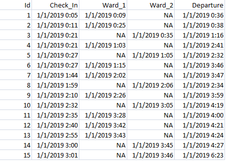The data used for this analysis consists of five columns: patient ID, patient check-in time, admission time to ward 1, admission time to ward 2, and patient check-out time. It should be noted that if a patient is admitted to ward 1, they are not admitted to ward 2, and vice versa. The arrival times of patients are recorded in the format of Month/Day/Year Hour/Minute.
Methodology
To measure the data quality accurately, the number of arrivals was counted on an hourly basis through the entire set of data using Microsoft’s SQL Server and SQL Server Management Studio(SMSS). The data was first imported into SMSS and converted into the datetime(2) type so that the format(year:month:day and hour:minute) can be recognized when selecting from the tables.
This is the SQL code for the query used to generate the number of arrivals and departures for each hour per day for the control data. A sample of the output is also shown.
The COUNT(*) function is used to count all rows in the data that have a different hour in the Check_In columns and displays it as a new column in the query results labeled Total_Arrivals. However, if you were to do this without considering using CAST which converts the (year:month:day) into a date and represents its own column “Day”, you would only be counting the number of arrivals to the hospital for each hour but not each hour per day. The lower half of the query for arrivals starting with GROUP BY is so SQL knows how to order the results in a table in chronological order.
The number of rows returned represents the number of hours in the control data. In over 200 hours the query result calculated a total number of 1000 patient arrivals which is exactly the number of rows from our raw data confirming the query was successful. The number of arrivals can also be calculated more easily per day from the raw data if you wanted examine trends in daily patient arrivals for a more generalized use case.
The original database can also be updated using the query results.
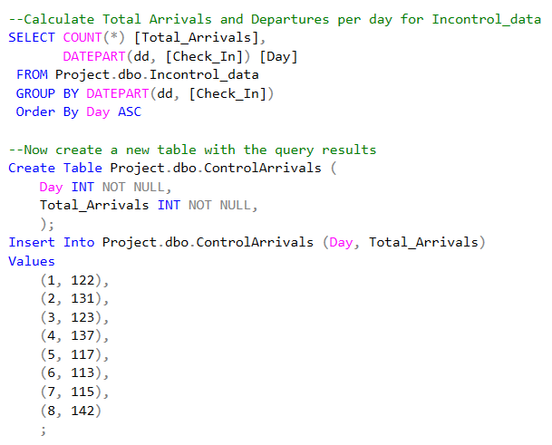 → 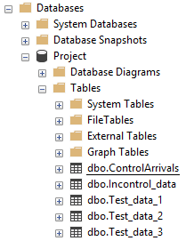Or the tables can be exported directly to a CSV for further processing using R.
Implications
Counting the number of arrivals to the hospital per hour can be useful in a number of ways. Here are a few examples:
1. Capacity planning: By understanding the number of patients arriving at the hospital per hour, hospital administrators can better plan for the necessary staff, beds, and other resources required to accommodate the patient volume.
2. Quality of care: If the number of patients arriving at the hospital exceeds the available resources, it can lead to longer wait times and potentially reduced quality of care. By tracking the number of arrivals per hour, hospital administrators can identify times when patient volume is high and take steps to address the issue, such as by adjusting staffing levels or implementing triage protocols.
3. Patient safety: By tracking the number of patients arriving at the hospital per hour, it may be possible to identify times when the risk of patient safety incidents (e.g. medication errors, falls) is higher due to increased patient volume. By anticipating and preparing for these times, hospital staff can take steps to reduce the risk of patient safety incidents.
4. Predictive modeling: By analyzing historical data on the number of patients arriving at the hospital per hour, it may be possible to develop predictive models that can forecast future patient volume. This can help hospital administrators prepare for expected increases in patient volume and take proactive steps to ensure that the necessary resources are available.
5. Identifying trends: By counting the number of arrivals per hour, it may be possible to identify trends in patient volume over time. For example, the number of patients arriving at the hospital may be higher on weekdays compared to weekends, or there may be seasonal variations in patient volume. Understanding these trends can help hospital administrators plan for and respond to changes in patient volume.
Experiments
Loading Data Using R
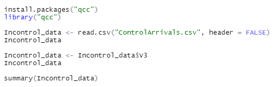
This is the R code snippet will be used to import our dataset. It reads the CSV file called "ControlArrivals.csv" and stores the contents in a data frame called "Incontrol_data". The header = FALSE argument specifies that the file does not have a header row, so there is no trouble with R mistaking our first row as feature titles.
A new object is created with the same name as our first object Incontrol_data. Now this object is told to contain only the values from the third column of the data frame. This represents the arrivals per hour that we queried from the SQL database.
Additionally, the summary function is applied to the Incontrol_data object, which prints a summary of the values contained in the object to the console. This summary includes the minimum, first quartile, median, mean, third quartile, and maximum values.
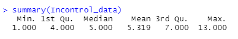
Statistical Analysis Using Control Charts
A quality control chart is a statistical tool used to monitor and analyze quality over time. It is commonly used in manufacturing and production settings to ensure that a process is in control and producing products that meet certain specifications.
A quality control chart typically includes upper and lower control limits, abbreviated as UCL and LCL, respectively. These limits are calculated using statistical techniques and are plotted on the chart along with the data. The UCL and LCL define the range within which the process is considered to be operating normally. If the data points on the chart fall outside of this range, it indicates that the process is out of control and that further investigation is needed to identify the cause of the deviation.
In this case, the hospital might set the UCL and LCL at plus or minus 3 standard deviations from the mean arrival time. If the data points fall within the limits, it would indicate that the process of patient arrival is operating normally. If the chart shows a sudden increase in the arrival times of patients, it could indicate that there is a problem with the process that needs to be addressed, such as an issue with the transportation of patients to the hospital. On the other hand, if the chart shows a consistent pattern of patient arrival times that fall within the limits, it would indicate that the process is functioning as expected.
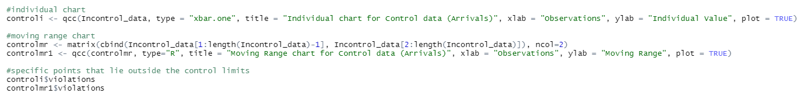
This code will create two control charts: an individual control chart and a moving range chart. An individual chart is used to monitor the process mean over time by plotting individual observations or measurements on the chart.
A moving range chart, monitors the process dispersion or variability over time. It is created by calculating the difference between successive observations in the data set, which are then plotted on the chart.
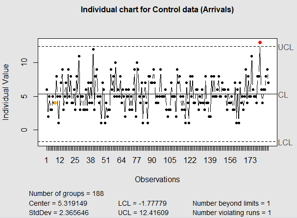 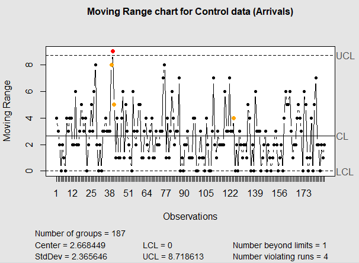
Our control data shows a process that is primarily in statistical control. It means that the process that the chart is monitoring is stable and predictable, and that any differences between the observed data and the expected value (i.e., the mean of the process) can be attributed to common causes of variation that are inherent in the process. However, notice the red plotted points that lie outside the control limits. Observation 181 on the individual chart and observation 40 on the moving range chart violate the control limits. If the points on the chart consistently fall outside of the control limits, it may indicate that there is an issue with the process that needs to be addressed. In this case, the outliers may not be significant enough to warrant correction.
Retrospectively, observations that violate the control limits corresponds to a particular day and hour where the hospital had patients arriving to quickly for the process to be stable (i.e. there may be slowdowns, or inefficient resource delegation). If we go back to the dataset we can see that observation 181 corresponds with the day 1/8/2019 where at 1pm the average number of patients arriving potentially caused a slowdown in the process. This is important because if there are significant slowdowns or trends in the data, it is possible to look back in the records and determine the time the disruption occurred.
It is important to note that the Hospital has assumed this dataset to be in process control, so we will continue with that assumption. The best practice in this situation may be to note the placement of the violations , and create a new control chart with points that remain within the control limits so it doesn't interfere with further testing.
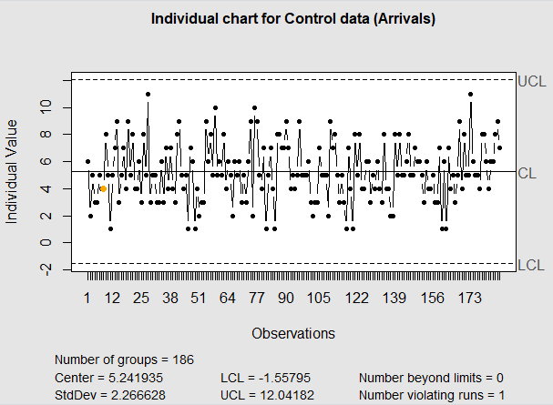 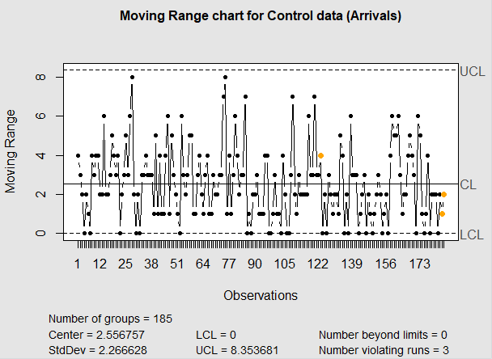
We now have a fair representation of the control data. We can apply the UCL and LCL from our control to test data set 1.
One of the first things to consider is the difference in the number of observations between the first sample of test data and the control. There is a difference of about 16 observations that represent an hour, each with a number of arrivals. However, with the number of observations taken from the control being so high, the control limits are likely to be fairly accurate for the model proposed which means that the greater number of observations in the test data should not be significant enough to rule out the model.
Additionally, there are several observations that exceed the control limits, the violations being more significant on the moving range chart, and are consistent with a slowdown occurring.
There are several potential causes for points on a chart to fall outside of the control limits:
1. Special cause variation: This is variation that is not due to common causes and is often the result of some sort of assignable cause, such as a change in the process or an unusual event.
2. Process change: If the process being measured changes over time, it can cause the data to fall outside the control limits.
3. Measurement error: If the measurement system is not precise or accurate, it can result in points falling outside the control limits.
4. Sampling error: If the sample size is too small, it can result in sampling error, which can cause the data to fall outside the control limits.
5. Shift in the process mean: If the mean of the process has shifted over time, this can also cause points to fall outside of the control limits.
It's important to identify the cause of any points that fall outside of the control limits in order to take corrective action and bring the process back into control.
If the cause of the slowdown is indentifiable and very basic (i.e. too many patients arriving and checking in within a select time frame or too few), a system could be created at the hospital registration desk where newcomers are checked in within select time frames. In this case, by acknowledging the control data, a maximum 11 arrivals per hour would be a healthy target.
If the process is optimized using the help desk technique or by the discovery of more identifiable causes of variation and corrected, the process will resume control. 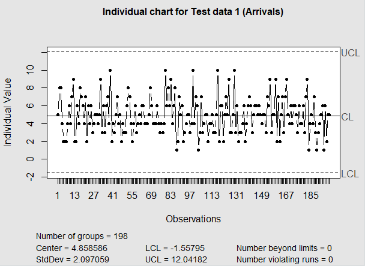 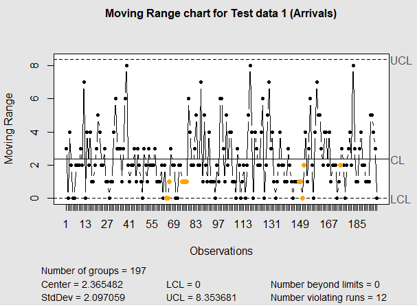
If we want to verify assumptions for non-parametric data, we can use the Mann-Whitney-Wilcoxon Test in R when comparing the control data and test data after both processes show control. This is similar to the two-tailed test however our data doesn’t fit the requirements for a t-test because it doesn’t have a set amount of subgroups, isn’t parametric and doesn’t appear normative. Wilcoxon test should prove that there is not a significance difference between the control data and the sample data that is under control. That would indicate its safety in applying the control measures, mean and standard deviation to the other samples in Phase II of the process.
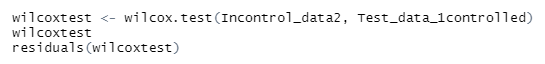 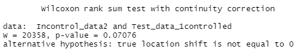
The p-value is shown to be greater than .05, so the null hypothesis is rejected, the data sets are not statistically different, and we can continue using the control assumptions.
Forecasting with ARIMA Model
Because our data counting is time series, it is often times encouraged to check for auto correlation that would be done using the residuals from this test or similar. Testing for auto correlation delves into another area of control charts where other quality characteristics in the hospital could indicate auto correlated data. Data can be shown to be auto correlated with the use of the auto correlation function(ACF) and partial auto correlation function(PACF). 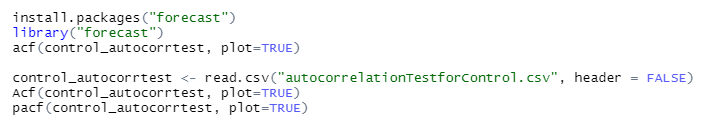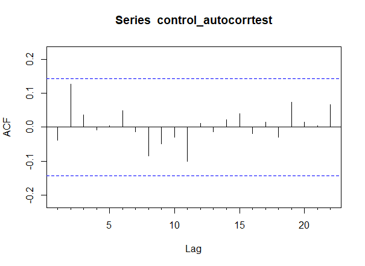 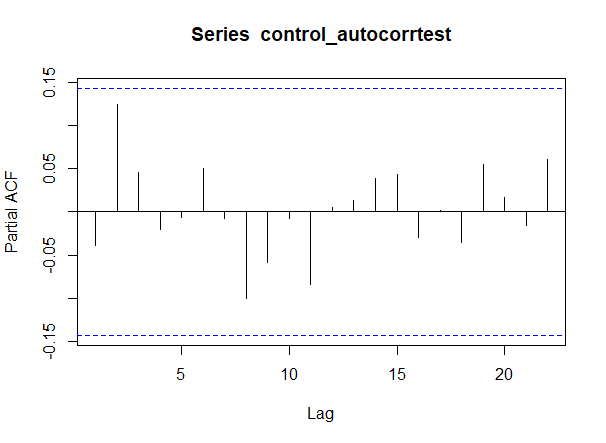
Often times in auto correlated data, an initial lag on the ACF plot could indicate that the data was auto correlated with itself in future lags meaning the quality characteristic measurements being studied could have some overlap during the data measurements. This type of analysis is more common in Auto Regressive Integrated Moving Average model (ARIMA), but this could be useful for testing auto correlation and forecasting values for process control.
Predictions are made for the next 24 hours at the hospital using the control data.
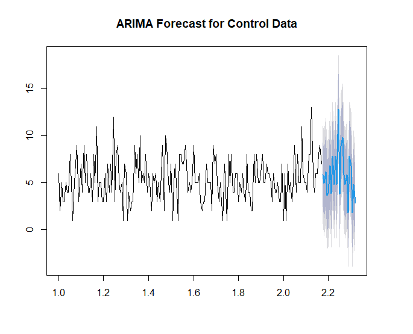
There is a high probability for the number of arrivals to spike again and exceed process control. Though this dataset is in control, this demonstrates the potential of forecasting future times where this is a high confidence of slowdowns occurring, and being able to take precautions or actions to ensure stability in the hospital process.
Conclusion
By studying the changes in means, variation and accumulated deviations from the mean in different control charts, we are able, with decent precision, to identify points and intervals that exceed the processes control which would otherwise have lead to greater instability. Organization is crucial when it comes to healthcare and being able to apply methods for identifying slowdowns is necessary so the overall capability is stronger, and more people can receive aid that need it, and the process can allow leeway for managers to implement these changes during work hours.
On a final note, it is important to consider the number of departures for this process. The number of departures can be calculated similarly using SQL by the hour, and this can be inspected using the plotting of Individual control charts to notice out of control scenarios. In the hospital, nurses can choose to hold patients over their stay time so the number of departures stay closer to one that is more statistically in control. This may be statistically significant when analyzing the rest of the data for the number of arrivals, but in terms of whats crucial in the the process, it seems that there is greater room for allowing patients to overstay based on the initial data, though controlling the number of departures for the process would take more calculations and calibration. Data and testing was also conducted for other parts of the sample data and is avaliable in the code and other files.